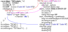
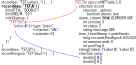
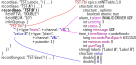
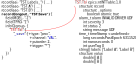

QSRV Groups¶
By default no Group PVs are defined.
A Group PV is a mapping of values stored in one or more database records and made visible through a PVA structure.
A Group is defined using a JSON syntax. Groups are defined with respect to a Group Name, which is also the PV name used when accessing the group. Unlike records, the “field” of a group have a different meaning than the fields of a record. Group field names are not part of the PV name.
A group definition may be split among several records, or included in separate JSON file(s). For example of a group including two records is:
record(ai, "rec:X") {
info(Q:group, {
"grp:name": {
"X": {+channel:"VAL"}
}
})
}
record(ai, "rec:Y") {
info(Q:group, {
"grp:name": {
"Y": {+channel:"VAL"} # .VAL in enclosing record()
}
})
}
Or equivalently with separate .db file and .json files.
Use dbLoadGroup() to load .json files.
# Store in some .db
record(ai, "rec:X") {}
record(ai, "rec:Y") {}
# Store in some .json
{
"grp:name": {
"X": {"+channel":"rec:X.VAL"}, # full PV name
"Y": {"+channel":"rec:Y.VAL"}
}
}
This group, named grp:name, has two group fields X and Y.
$ pvget grp:name
grp:name
structure
epics:nt/NTScalar:1.0 X
double value 0
alarm_t alarm INVALID DRIVER UDF
time_t timeStamp <undefined> 0
...
epics:nt/NTScalar:1.0 Y
double value 0
alarm_t alarm INVALID DRIVER UDF
time_t timeStamp <undefined> 0
...
So pvget grp:name is compatible to pvget rec:X rec:Y with the added
benefit that with the former, values from the two records are read atomically on the server,
and delivered together.
JSON Reference¶
A Group JSON schema definition file is available. Keys beginning appear in contexts where a name may be either a data field name, or a special key.
record(...) {
info(Q:group, {
"<group_name>":{
+id:"some/NT:1.0", # top level ID
+atomic:true,
"<field.name>":{
+type:"scalar",
+channel:"VAL",
+id:"another/NT:1.0",
+trigger:"*",
+putorder:0,
},
# special case adds time/alarm meta-data fields
# at top level
"": {+type:"meta", +channel:"VAL"}
}
})
}
Note
When using separate JSON files, mappings must be quoted: e.g. +id should be "+id".
Mapping +type:
scalar(default) places an NTScalar or NTScalarArray as a sub-structure. (see NTScalar and NTScalarArray)plainignores all meta-data and places only the “value” as a field.The field placed will have the type of the
valuefield of the equivalent NTScalar/NTScalarArray as a field.
anyplaces a variant union into which the “value” is stored.metaplaces only the “alarm” and “timeStamp” fields ofscalar.structureplaces only the associated+id. Has no+channel.procplaces no fields. The associated+channelis processed on PUT. “proc” mappings will almost always set+putorderto control the relative ordering of record processing.constplaces the value of the+constmapping, so it doesn’t use any information from the enclosing record, if there is any.
Mapping +channel:
Most mapping +type require a +channel.
The most common record field to map is +channel: "VAL".
When included in an info(Q:group, ..., the +channel must only name a field of the enclosing record.
(eg. +channel:"VAL")
When in a separate JSON file, +channel must be a full PV name, beginning with a record or alias name.
(eg. "+channel":"record:name.VAL")
Mapping +trigger:
Triggers define when and which changes to the constituent field are translated into a subscription update to the group.
+trigger may be set to:
""(default) means that changes to the field do not cause a subscription update. (see note below)"*"causes a subscription update containing the most recent values/meta-data of all group fields.A comma separated list of field names causes an update with the most recent values of only the listed group fields. eg.
+trigger: "value.A, value.B"doesn’t updatelabelsortimeStamp.
For a new group definition, including records from one or more record processing chains,
the last record in that chain should have a +trigger mapping listing the group fields
updated by records in that chain.
In the common case where a group is mapped to records in only one processing chain,
then the last mapped record in that chain should have +trigger: "*".
Note
As a special case. A group with no +trigger mappings at all will function as if every mapping
includes a +trigger mapping for itself.
This is done so that such a situation does not cause confusion by posting no monitor updates at all.
However, this situation will almost never give desired behaviour as changes to records which
could otherwise be atomic will be split into multiple subscription updates.
Mapping +putorder:
+putorder must be set for a field to be writable through a group PV.
When more than one mapping has an order defined, the numeric value is used to define
the order in which the associated records are processed (in increasing order).
Additionally, the values of +putorder also control the order of fields in the group PV definition.
This control is necessary only in limited cases, such as the NTTable specification,
where the iteration order of fields must match the order of the labels array.
+const must be set when using +type: "const". It accepts literals, e.g. integers, floats, and strings.
Understanding Groups¶
NTTable Group Example¶
One motivating use case for groups involves moving tabular data, encoded as “NTTable”.
The overall goal of the TST:Tbl group PV is to take what would be a series of
discrete, non-atomic, network operations
caput -a TST:A X 1 2 3
caput -a TST:B X 5 6 7
caput TST:Save.PROC 1
can instead be a single, atomic, network operation
pvput TST:Tbl value.A='[1,2,3]' value.B='[5,6,7]'
A subscriber sees:
pvmonitor TST:Tbl
TST:Tbl <undefined> INVALID DRIVER UDF
"Label A" "Label B"
TST:Tbl 2023-08-30 09:55:19.999
"Label A" "Label B"
1 5
2 6
3 7
This effect is achieved by mapping a table of two columns (“A” and “B”) onto two aao records.
With a third record to take some action once both are updated.
The following is meant to illustrate the mapping between the individual records,
and the fields of the group PV TST:Tbl.
On the left hand side are the contents of a file test.db,
and on the right the output of pvget TST:Tbl.

Here the TST:Labels_ record contributes two mappings to the TST:Tbl Group.
(a record might contribute mappings to more than one group)
This +id mapping contributes only the static type label string.
it could be attached to any of the four records, and is arbitrarily placed with this one.
Necessarily, the label mappings provides the column labels of the “NTTable” definition.
So the record TST:Labels_ field VAL is mapped into TST:Tbl as labels.
With +type: "plain", this appears as a string array (“string[]”).

The TST:A record contributes only a value.A field.
With +type: "plain", this appears as a string array (“double[]”).
The value.A mapping also sets +putorder: 0, which is necessary to allow this group member
field to be changed through a PUT to the Group PV.
The numeric value controls the order in which records effected by a PUT are processed.
Processing occurs in order of increasing +putorder.

The TST:B record contributes both a value.B field in the same manner as the A field/column.
Additionally, it contributes a special "" field with +type: "meta".
This exposes the TST:B.VAL timestamp and alarm meta-data as the sub-structure
fields alarm and timeStamp.

The final record TST:Save does not contribute any data fields.
Instead it contributes a special +type: "proc" mapping.
Also, it contributes a +trigger mapping so that processing this record will
trigger a subscription/monitor update to all (changed) fields.
Note, the field name _save only needs to be locally unique within the group,
but is otherwise ignored.
Database Listing¶
Loading the following with.
dbLoadRecords("table.db", "N=TST:,LBL1=Label A,LBL2=Label B,PO1=0,PO2=1")
1
2record(aai, "$(N)Labels_") {
3 field(FTVL, "STRING")
4 field(NELM, "2")
5 field(INP , {const:["$(LBL1)", "$(LBL2)"]})
6 info(Q:group, {
7 "$(N)Tbl":{
8 +id:"epics:nt/NTTable:1.0",
9 "labels":{+type:"plain", +channel:"VAL"}
10 }
11 })
12 field(TPRO, "1")
13}
14
15record(aao, "$(N)A") {
16 field(FTVL, "DOUBLE")
17 field(NELM, "10")
18 info(Q:group, {
19 "$(N)Tbl":{
20 "value.A":{+type:"plain", +channel:"VAL", +putorder:$(PO1)}
21 }
22 })
23 field(TPRO, "1")
24}
25
26record(aao, "$(N)B") {
27 field(FTVL, "DOUBLE")
28 field(NELM, "10")
29 info(Q:group, {
30 "$(N)Tbl":{
31 "":{+type:"meta", +channel:"VAL"},
32 "value.B":{+type:"plain", +channel:"VAL", +putorder:$(PO2)}
33 }
34 })
35 field(TPRO, "1")
36}
37
38record(longout, "$(N)Save") {
39 field(MDEL, "-1") # ensure we always trigger group monitor
40 field(TPRO, "1")
41 info(Q:group, {
42 "$(N)Tbl":{
43 "_save":{+type:"proc",
44 +channel:"VAL",
45 +putorder:2,
46 +trigger:"*"}
47 }
48 })
49}